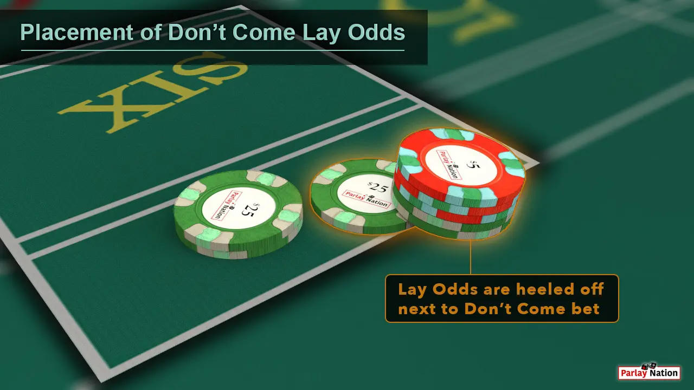
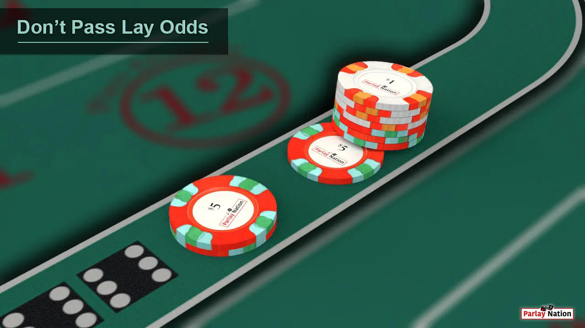
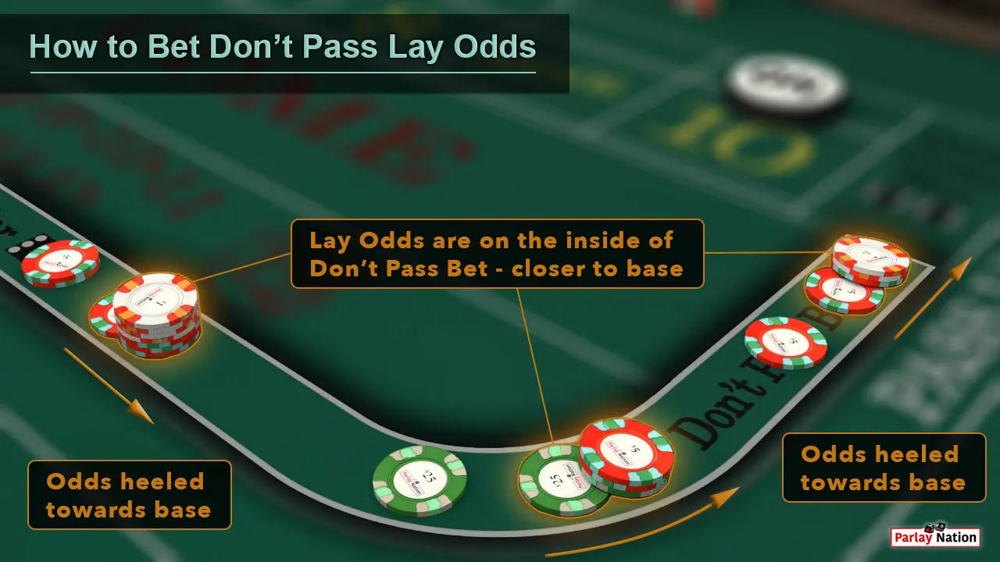
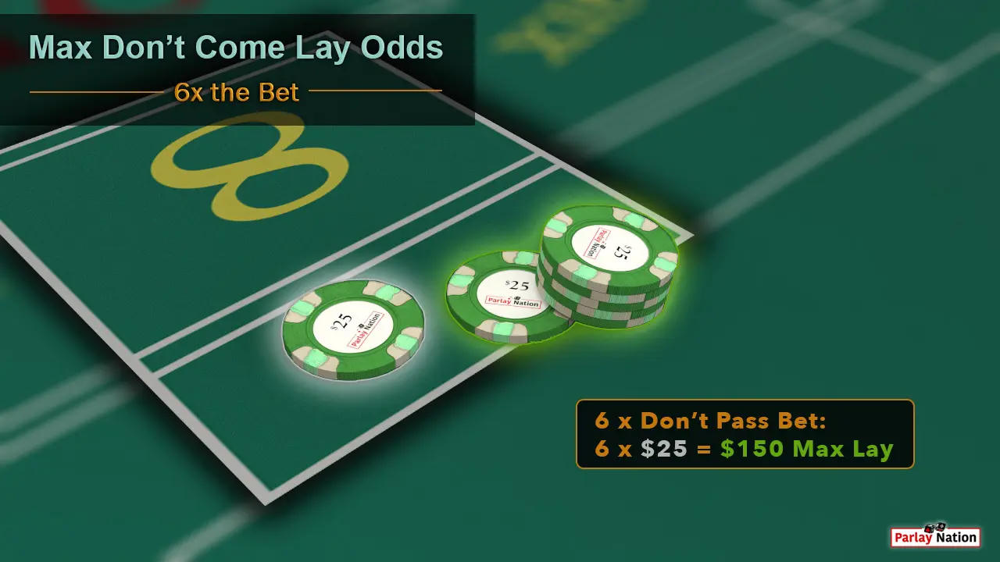

The First Rule
You never bet the come-out. That is the first and hardest rule. While the table leans forward for the seven or eleven, you stay still. No Pass. No Don’t Pass. Nothing. The point must be established and the puck must be on before you move a single chip.
Only then do you act. You place a Don’t Come. That is the only flat wager this method allows. You may size it however you want within the table limits and you may change that size on every new bet. There is no required progression and no other bet is permitted. No Field. No Place numbers. No hardways. No propositions. Just the Don’t Come, and optionally the lay odds behind it.
Heeling the Odds
Once the dealer moves your Don’t Come onto a number, you decide whether to lay odds. Skipping the odds is fully allowed. If you do lay, you may go up to 6× (or whatever the table posts). The physical placement is where the method becomes real.
On the Don’t side the real estate is tight. The number boxes are smaller than they appear from the rail. Other players’ action crowds the area. You do not stack the odds the way Pass Line players do. You heel them. The odds chips sit angled and offset next to the flat bet, usually oriented toward the base dealer. It looks a little like the heel of a shoe. That angle is deliberate — it tells the dealer which chips are the free-odds portion so they can be paid first.


The Tight Space
A proper heel stack on a 4 or 10 might be a $10 flat with $60 heeled beside it. The same ratio holds on a 5 or 9 and on a 6 or 8. The chips will not always sit perfectly. Sometimes they lean. Sometimes a later bet from another player nudges them. Sometimes the second-base or third-base dealer has to reach in and tidy the mess before the next roll.
That is normal. It is expected. You do not apologize for it and you do not try to micro-manage the dealer’s hands. The method accepts that the backside of the layout is a working space, not a display case. If the money has fallen all over the place and the dealer is sorting it, that is simply part of the job on the Don’t side.

The Numbers
You prefer numbers the rest of the table is not heavily covering. Etiquette and clarity both improve when your Don’t Come is the only action on that box. You are not trying to fight the table’s energy. You are simply positioning yourself for the same outcome the casino wants — the seven-out that clears the layout.
When the seven does come, the math is clean. Using a $10 flat with 6× lay odds:
| Point | Lay Ratio | Odds Risk | Total Win |
|---|---|---|---|
| 4 or 10 | 1 : 2 | $60 | $40 |
| 5 or 9 | 2 : 3 | $60 | $50 |
| 6 or 8 | 5 : 6 | $60 | $60 |
You can scale those amounts up or down. The ratios stay the same. The house edge on the flat Don’t Come is already the lowest main bet on the table. The odds portion carries zero edge. The combined cost of the method is as low as structured craps play gets.

Alignment
You repeat the cycle. New point, new Don’t Come if you want one, optional heel of odds, wait for the seven or the number. You never chase. You never switch to the Pass side mid-hand. You stay aligned with the only interest that is permanent at the table — the casino’s desire for the seven that ends the roll.
This is not a claim that the dice are imperfect. It is simply the observation that any table that is winning for the house will, by definition, be producing the sevens that favor this position. You are not betting against the shooter in spirit. You are waiting until the point is set, then quietly taking the side that the house itself is already on.
The Method in One Breath
Sit out the come-out.
Don’t Come only.
Heel the odds if you choose.
Accept the tight space and the occasional messy stack.
Let the seven do the rest.